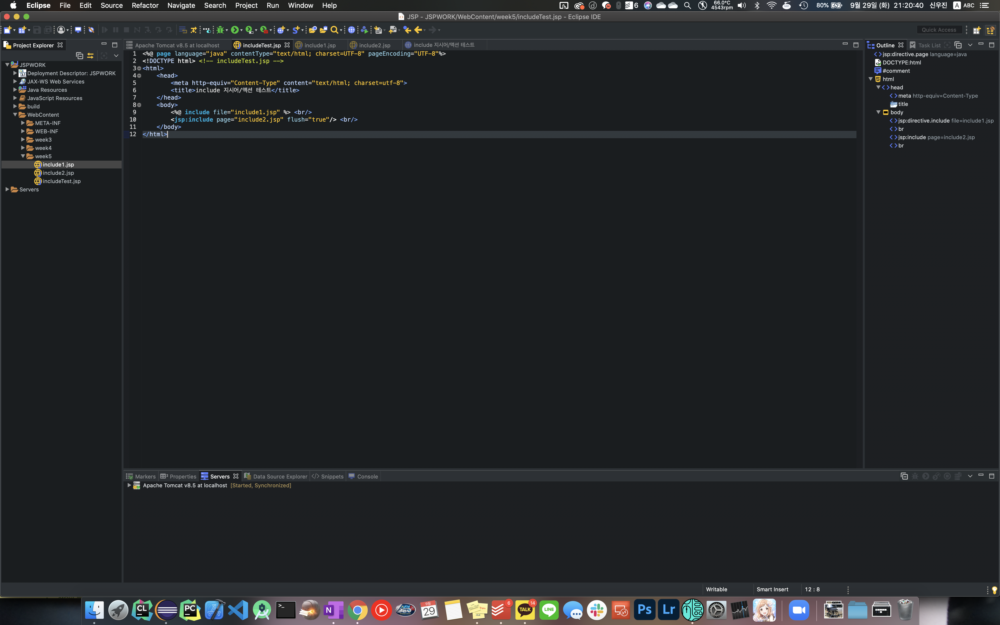
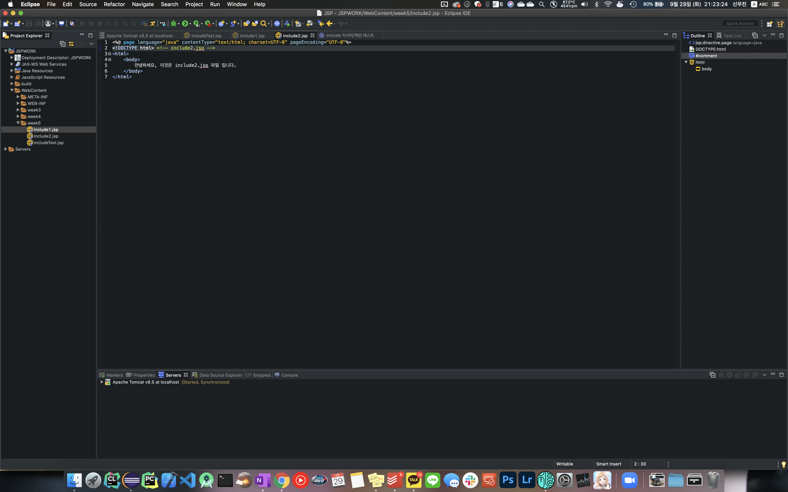
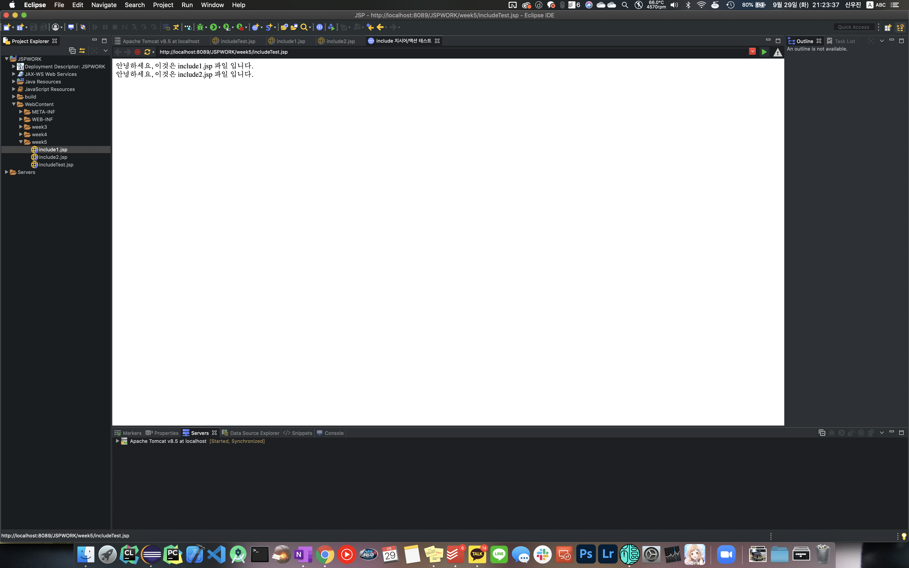
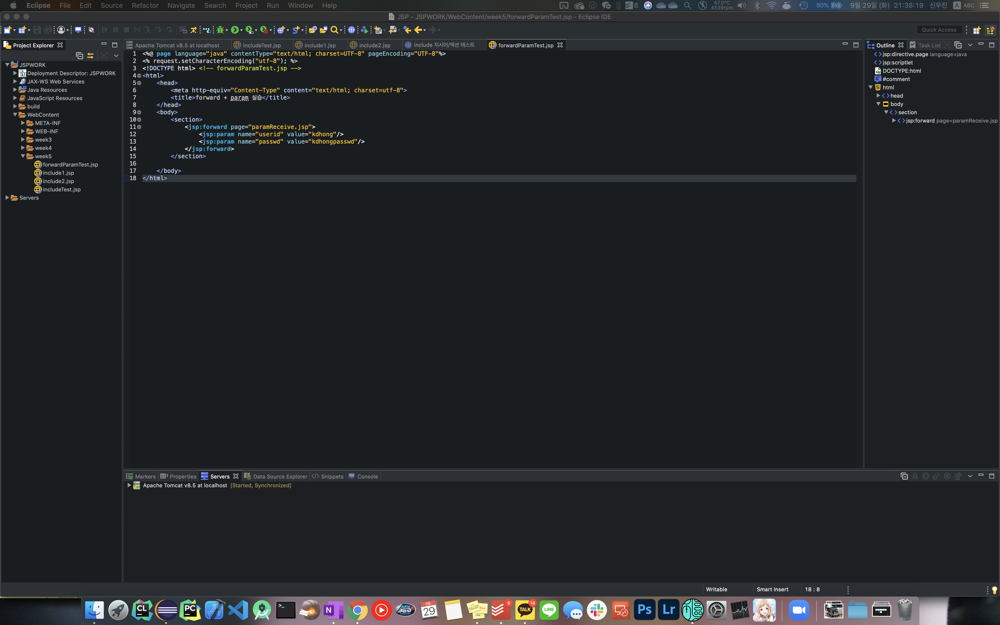
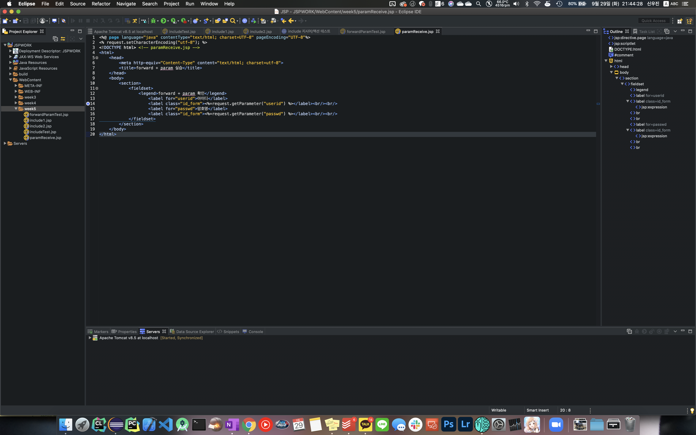
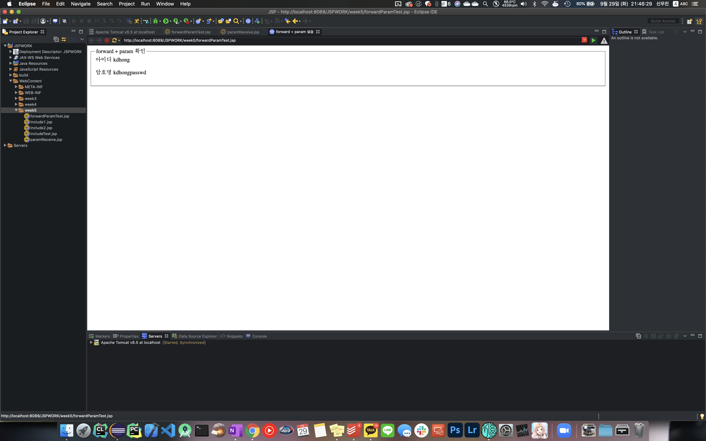
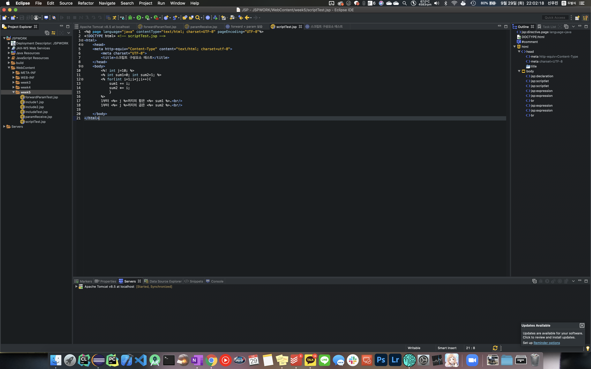
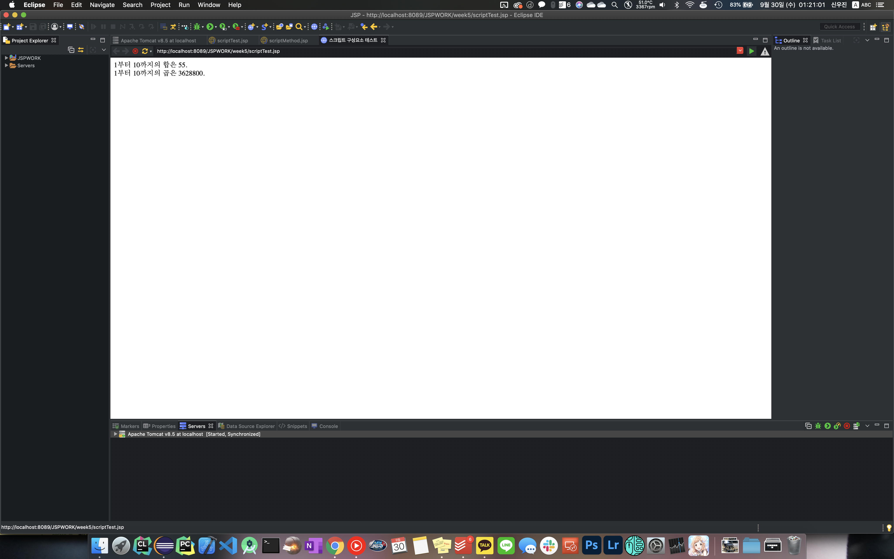
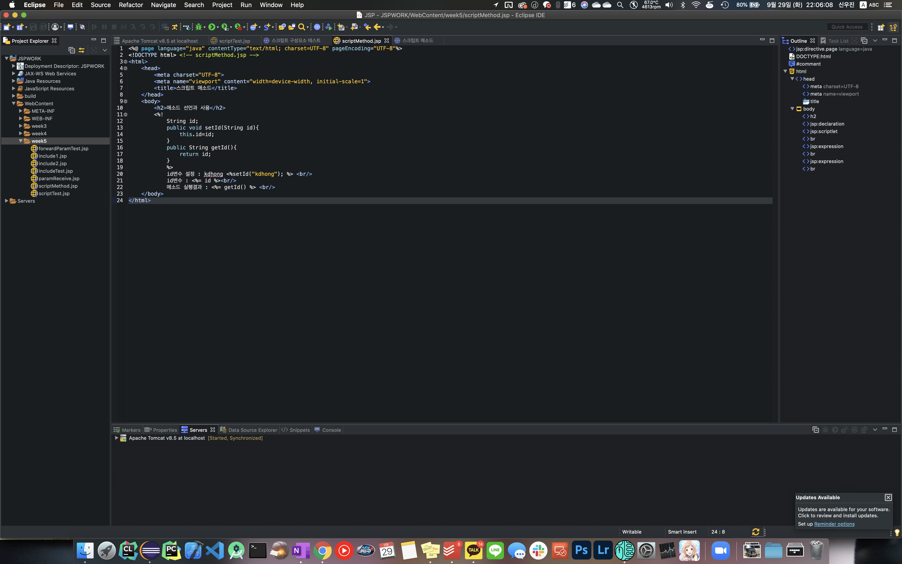
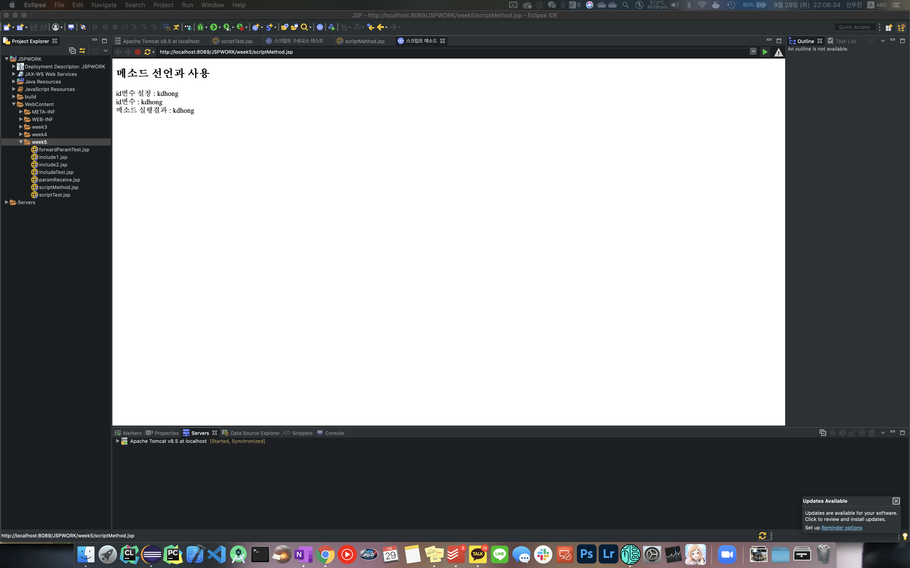

<< 1번 과제 - include 액션 사용하기(includeTest, include1, include2) >>
소스 코드
jsp - includeTest

jsp - include1
jsp - include2

결과 이미지
jsp

<< 2번 과제 - Forward + param 액션 사용하기 (forwardParamTest, paramReceive) >>
소스 코드
jsp - forwardParamTest

jsp - paramReceive

결과 이미지
jsp

<< 3번 과제 - 스크립트 선언문, 스크립틀릿, 표현식 사용하기 (scriptTest) >>
소스 코드
jsp - scriptTest

결과 이미지
jsp

<< 4번 과제 - 스크립트 메소드 사용하기 (scriptMethod) >>
소스 코드
jsp - scriptMethod

결과 이미지
jsp
